Gestione IT completa
Gestione di hardware, software e funzioni di rete.
Progettiamo e integriamo servizi informatici, sviluppo software, gestione documentale e robotica collaborativa per PMI e industria. Dal gestionale al cobot, un unico interlocutore.
LD Technologies SRL è un’azienda operante nel settore dei servizi informatici, dello sviluppo software e della gestione documentale. Offriamo prodotti e servizi innovativi, personalizzati e di elevato standard qualitativo per rendere semplice e veloce il lavoro quotidiano dei nostri Clienti.
Negli anni abbiamo portato lo stesso metodo anche nell’automazione: soluzioni custom che superano i limiti dei prodotti standard e si integrano nel flusso operativo già presente in azienda. Non abbiamo formule segrete: gli unici ingredienti sono il lavoro ed il metodo.
Ci occupiamo di semplificare e integrare processi aziendali, applicazioni e sistemi informatici, con le tecnologie leader di mercato, per PMI e Pubblica Amministrazione locale.
Gestione di hardware, software e funzioni di rete.
Progettiamo una rete informatica adeguata e personalizzata.
Valutiamo con attenzione il sistema di sicurezza della tua azienda.
Semplifica e riduci i costi di implementazione e mantenimento dell’infrastruttura IT.
Progettazione e sviluppo di software applicativo, integrato nel sistema informativo esistente.
Aumenta l’efficienza, riduci gli errori e migliora la precisione.
Realizza il tuo sito web moderno, veloce e performante.
Servizi di cloud computing affidabili e personalizzabili.
Secondo lo studio riportato dal Financial Times in “Meet the cobot: humans and robots together on the factory floor”, la collaborazione aumenta la produttività rispetto all’uso separato di persone e robot.
Lucidatura e levigatura con un tocco specifico e delicato.
Gestisci le macchine e libera i dipendenti per compiti più preziosi.
I bracci robotici collaborativi offrono precisione e coerenza.
Processi di assemblaggio ripetibili e accurati.
Con i cobot meno rischio di lesioni e sforzi per i dipendenti.
La saldatura robotizzata garantisce maggiore precisione e uniformità.
I cobot sono progettati per lavorare in sicurezza a stretto contatto con le persone, riducendo il rischio di lesioni o danni.
Possono lavorare in modo autonomo o insieme ai lavoratori, aumentando la produttività e riducendo i tempi di fermo.
Si adattano rapidamente alle esigenze del lavoro: cambio di attrezzatura e riprogrammazione semplici.
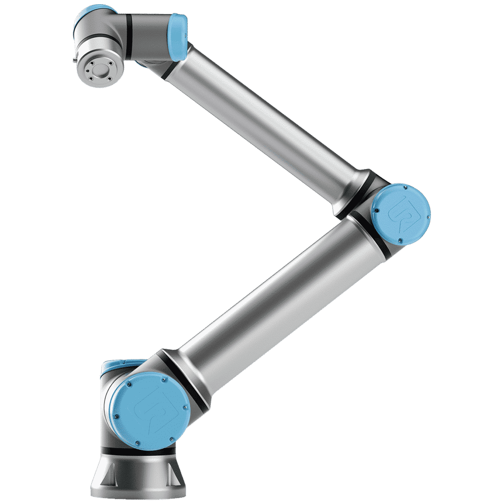
Cobot a 6 assi: 12,5 kg di carico utile e 1300 mm di raggio d’azione. Ideale per asservimento macchine, pallettizzazione e imballaggio. Sicurezza certificata ISO 10218-1.
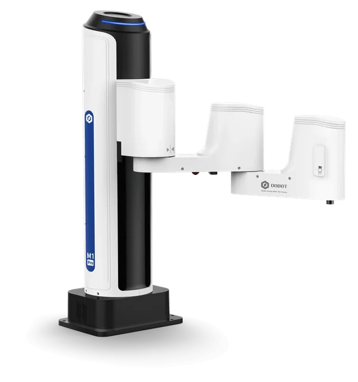
Cobot a 4 assi, compatto e plug & play, ideale per le esigenze produttive dell’industria leggera.
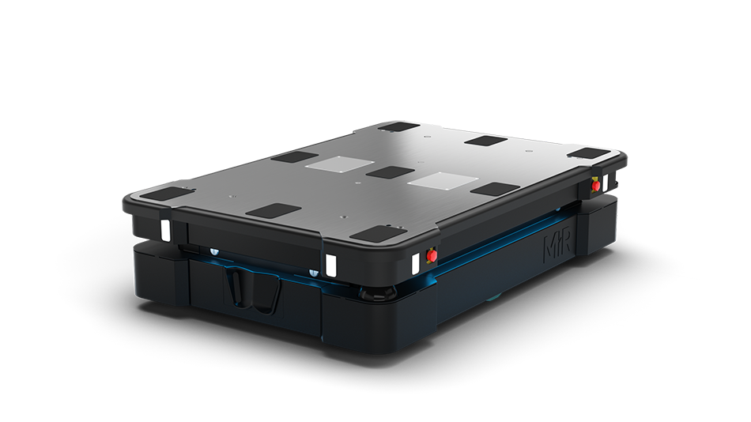
Robot mobile collaborativo per il trasporto di pallet e merci pesanti, conforme a ISO 3691-4 e IP52.
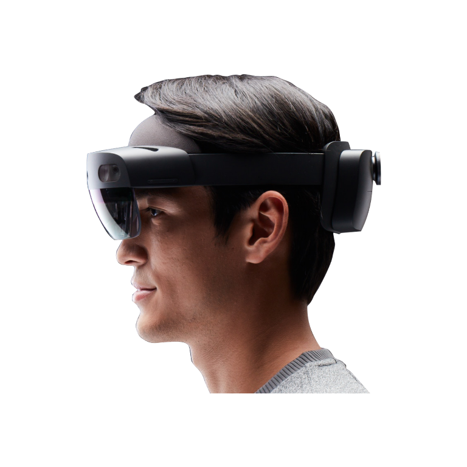
Realtà mista a mani libere per lavorare in sicurezza e collaborare da remoto tramite ologrammi.
Ogni progetto è analizzato e verificato insieme al Cliente, che resta sempre aggiornato sulle fasi di sviluppo e può chiedere modifiche in corso d’opera.
Studiamo problemi, necessità e processi da migliorare, condividendo i risultati con te prima di passare alla programmazione.
Architettura flessibile e scalabile, interfaccia pensata per l’usabilità e scelta della tecnologia più adatta alle tue esigenze.
Realizzazione sotto rigido controllo, collaudo e rilascio di una procedura affidabile e veloce.
Le aziende più virtuose del territorio hanno scelto di rivolgersi a noi per l’utilità dei servizi offerti e per le competenze mostrate negli anni. Apri una scheda per vedere cosa abbiamo fatto.
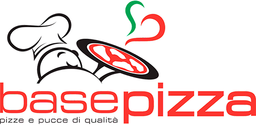
Rack con server e storage a noleggio, gestionale con tracciabilità dei lotti, M-Files CRM e rete Gigabit cat. 6 in tutta la palazzina.
Il cliente Produce panificati realizzati con materie prime del territorio, stesi a mano e cotti su pietra.
Per il cliente Base Pizza SRL abbiamo operato in diverse fasi:
Opera realizzata Cablaggio rete dati cat. 6 / Gestionale / M-Files® On Site / Infrastruttura Server
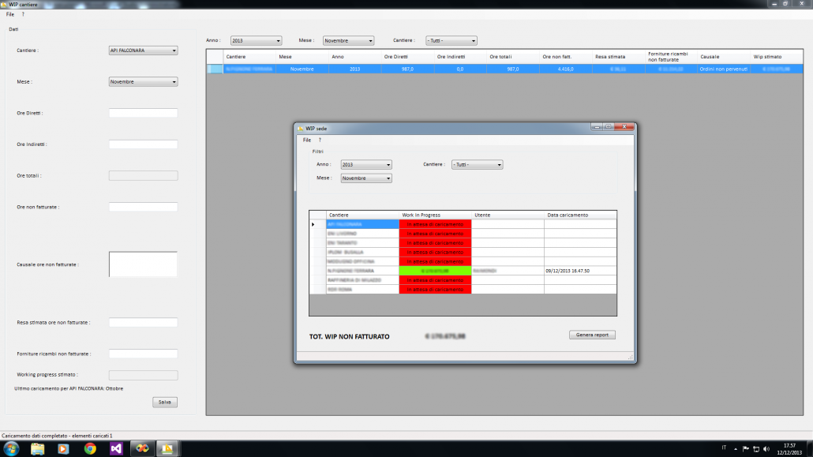
Otto nuovi moduli per il gestionale: dal Work in Progress al Cost Control e alla fatturazione attiva.
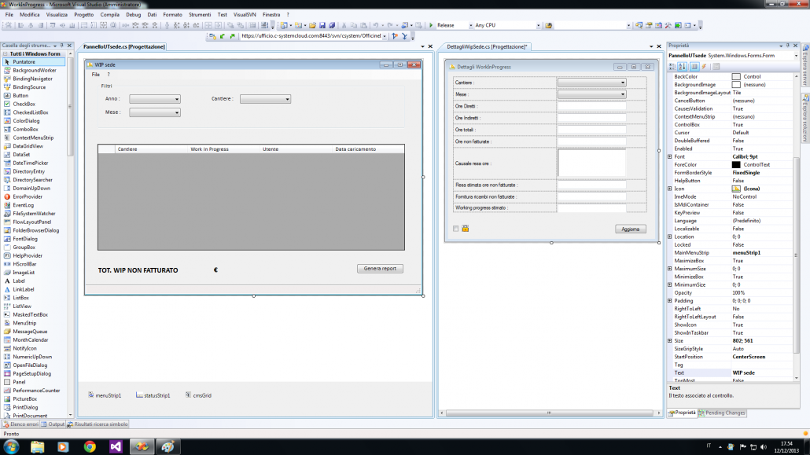
Il cliente Costruzione e manutenzione di macchine e apparecchiature presso le principali raffinerie e i grandi complessi industriali nazionali.
Abbiamo contribuito a completare un software gestionale già presente in azienda, che aveva bisogno di moduli e funzioni aggiuntive per migliorare i processi aziendali. Dopo un’accurata analisi delle complesse dinamiche lavorative del Cliente, abbiamo sviluppato i moduli:
Sito ufficiale, software gestionale interno e app mobile per il monitoraggio dei veicoli.
Il cliente Società per Azioni che opera a Bari dal 1980: impiantistica e servizi di gestione e manutenzione in ambito energetico e facility (acqua, gas, energia, impianti per il settore ambientale).
Per il cliente FAVER abbiamo realizzato:
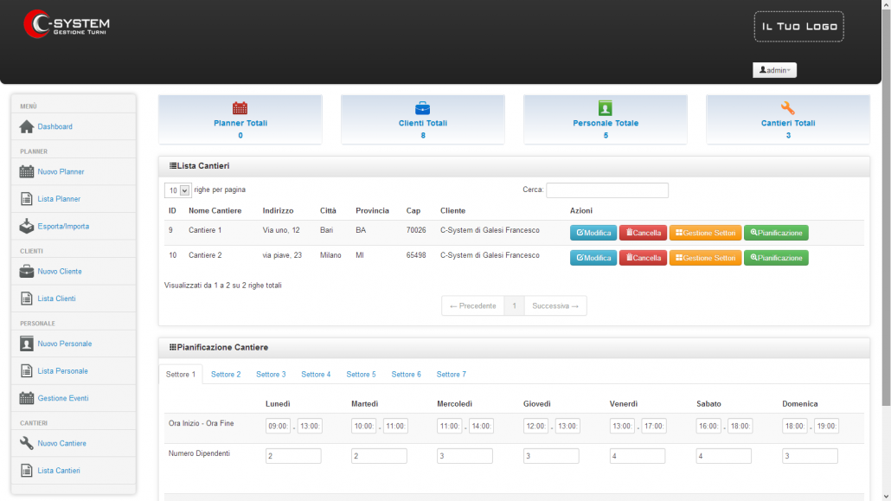
Algoritmo di assegnazione del personale ai cantieri che genera turni complessi, personalizzabili dall’utente.
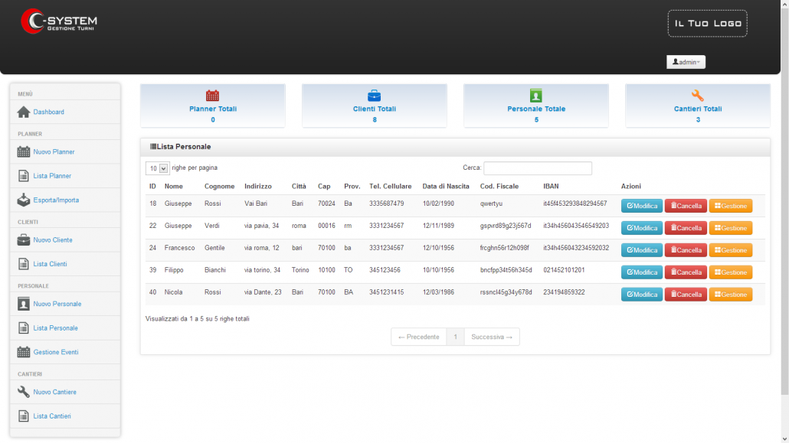
Abbiamo realizzato interamente l’algoritmo di assegnazione del personale ai vari settori di ciascun cantiere, in base a molteplici parametri:
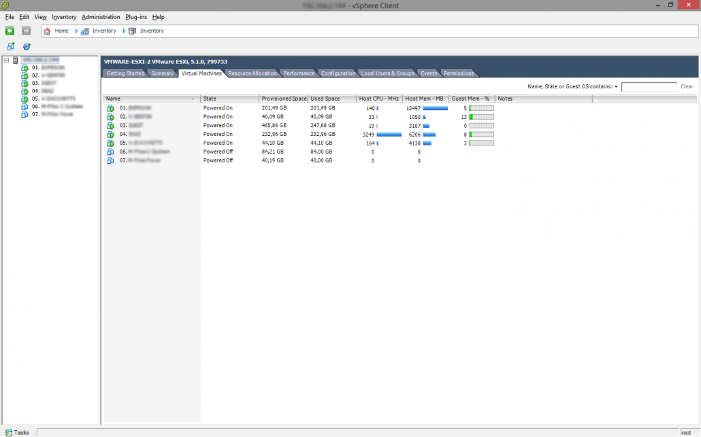
Virtualizzazione dell’intera infrastruttura server, potenziata con nuove apparecchiature e backup. Assistenza sistemistica continua.
Il cliente Leader nel mercato della gestione della clientela attiva e del credito performing.
Per il cliente Serfin spa abbiamo realizzato la virtualizzazione dell’intera infrastruttura server, potenziandola con la fornitura di ulteriori apparecchiature per l’esecuzione degli applicativi e per la realizzazione e conservazione dei backup.
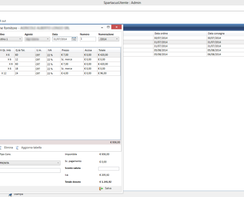
Software su misura per gli ordini ai fornitori e gestione evoluta della scontistica Sell in / Sell out, anche off-line.
Il cliente Agenzia TRES / Agenzia Martello: partner di rappresentanze e consulenze commerciali, presente a Bari.
Abbiamo realizzato un software su misura per la creazione e gestione degli ordini ai fornitori effettuati dai clienti delle agenzie di rappresentanza.
Software su misura per la gestione delle schede portafoglio degli appartamenti a catalogo.
Il cliente Agenzia presente in tutta Italia da oltre 30 anni.
Abbiamo sviluppato un software su misura per gestire le schede portafoglio che l’agenzia usa per le informazioni sugli appartamenti a catalogo.
Opera realizzata Gestione schede portafoglio tramite software sviluppato su misura
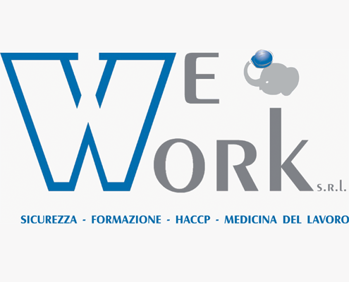
Soluzione software BPM e modulo di fatturazione.
Il cliente Sicurezza, formazione, HACCP e medicina del lavoro.
Per il cliente We Work srl abbiamo realizzato:
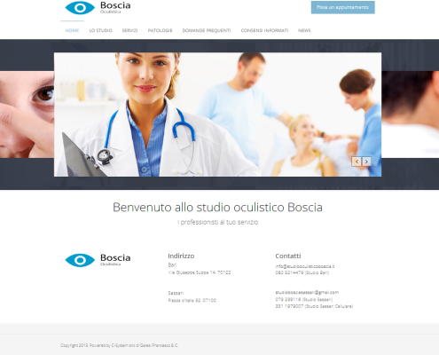
Sito web aziendale completo di logo, impostazione grafica e sistema di prenotazione.
Il cliente Studio oculistico con sede a Bari.
Abbiamo realizzato il sito web aziendale, occupandoci delle seguenti fasi:
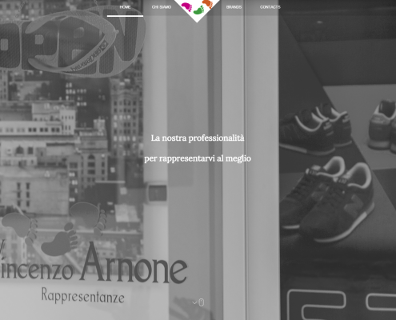
Sito web e-commerce.
Il cliente Fashion Studio SRL di Vincenzo Arnone.
Per il cliente Fashion Studio abbiamo realizzato un sito web e-commerce.
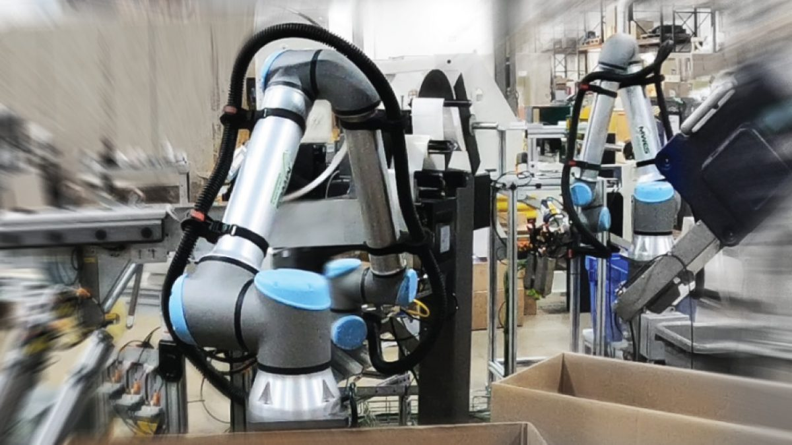
Piattaforma che unisce robotica e intervento umano per migliorare la qualità delle giunzioni rivettate.
La rivettatura collaborativa rappresenta un approccio innovativo nel settore manifatturiero, combinando competenze umane e tecnologie avanzate per ottimizzare i processi di assemblaggio.
Stazione di pallettizzazione automatizzata con un cobot che lavora in sicurezza accanto agli operatori.
Il progetto “Pallet Station con Cobot” ottimizza il processo di pallettizzazione integrando un robot collaborativo in grado di lavorare in sicurezza accanto agli operatori.
Linea automatizzata con più cobot per formare, riempire e pallettizzare scatole.
Realizzazione di una linea automatizzata per la formatura, il riempimento e la pallettizzazione di scatole utilizzando più cobot.
Progettazione e realizzazione di una linea automatizzata per scatole industriali, con sistemi avanzati di automazione e controllo.
Progettazione e realizzazione di una linea automatizzata per la formatura, il riempimento e la pallettizzazione di scatole industriali.
Cobot JAKA integrato con una stampante industriale: preleva le etichette e le applica sulle pedane.
Automazione del processo di etichettatura delle pedane attraverso l’integrazione di un cobot JAKA e una stampante per etichette industriale.
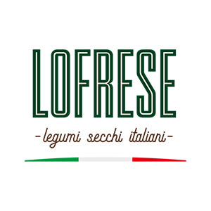
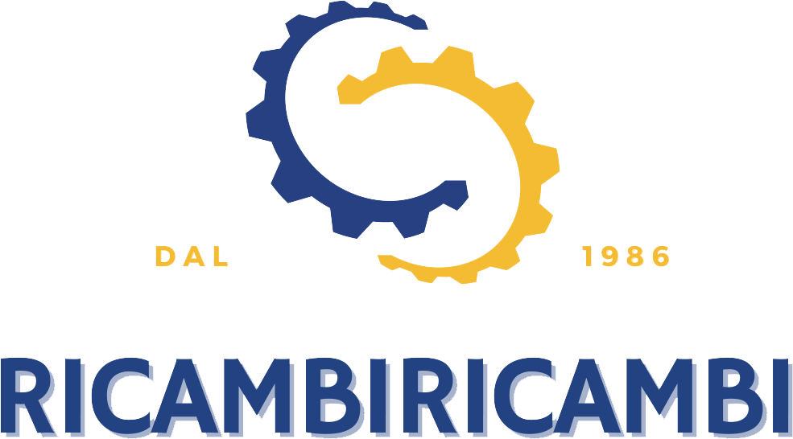
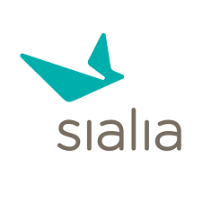
Sono molto soddisfatto dei servizi dell’azienda. Hanno migliorato l’efficienza dei nostri processi produttivi grazie alla Cobotica e fornito un ottimo supporto.
La scelta di questa azienda di automazione e robotica collaborativa è stata vincente. Hanno aumentato la produttività e ridotto del 60% i costi operativi.
Siamo estremamente soddisfatti dei risultati ottenuti collaborando con questa azienda. Hanno rivoluzionato il nostro sistema produttivo e offerto un ottimo supporto post-vendita.
Selezioniamo e integriamo la tecnologia giusta per il tuo processo: soluzioni pronte all’uso oppure progetti custom che si integrano nel flusso operativo già presente in azienda.
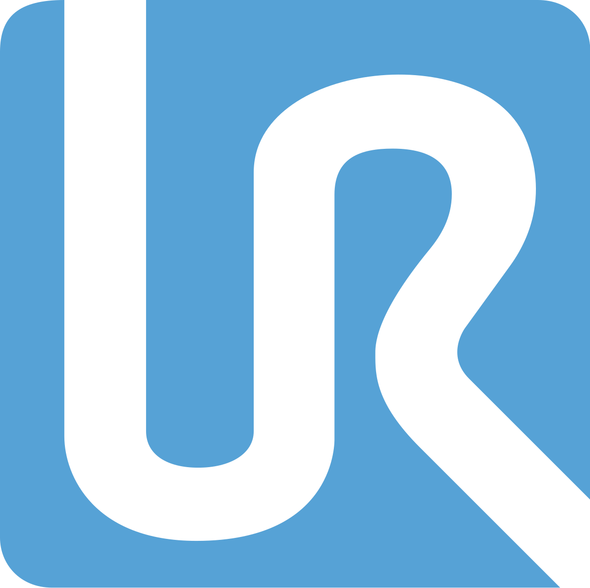
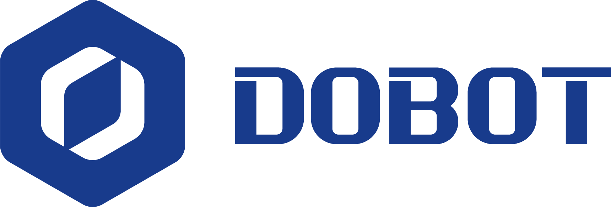
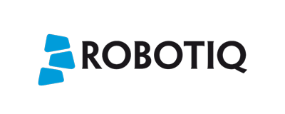
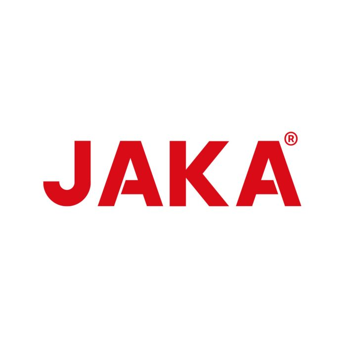
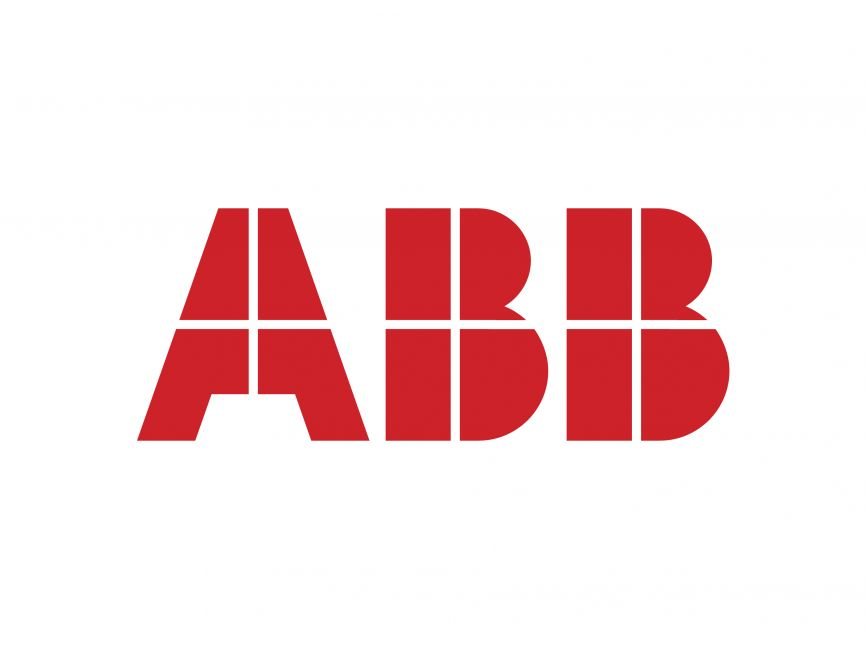
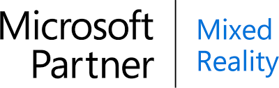
UR10e: carico utile elevato e grande raggio d’azione per asservimento, pallettizzazione e imballaggio.
L’UR10e è un robot industriale collaborativo straordinariamente versatile, in grado di offrire sia un elevato carico utile di sollevamento sia un ampio raggio d’azione, il che lo rende adatto a un’ampia gamma di applicazioni. È offerto anche come sistema robotico OEM e con un Teach Pendant abilitante a 3 posizioni.
Caratteristiche
Applicazioni
M1 Pro: compatto e plug & play, pensato per l’industria leggera.
L’M1 Pro eredita e migliora le capacità dell’M1 e integra le piattaforme software e hardware all’avanguardia di Dobot, rendendolo ideale per le esigenze di produzione dell’industria leggera: può eseguire attività ancora più complicate.
Caratteristiche
Applicazioni
MiR 1350: trasporto di pallet e merci pesanti in ambienti dinamici.
MiR 1350 supporta un elevato carico utile che consente il trasporto di pallet e merci pesanti. Il design robusto garantisce lunga durata e facile manutenzione. Naviga in modo fluido ed efficiente in ambienti dinamici ed è progettato sulla base degli attuali standard di sicurezza, migliorando la capacità di resistere a polvere e fluidi.
Caratteristiche
Applicazioni
HoloLens 2: lavora a mani libere e collabora da remoto tramite ologrammi.
HoloLens 2 permette di mantenere la concentrazione più a lungo e con il massimo comfort, senza guardare lo schermo e usando liberamente le mani, per completare le attività in tutta sicurezza e senza errori. Entra in contatto con i colleghi da remoto, collaborando attraverso ologrammi, per risolvere i problemi in tempo reale.
Caratteristiche
Applicazioni
Il cobot protagonista del nostro progetto di etichettatura pedane.
Cobot JAKA integrato con una stampante per etichette industriale nel nostro progetto di etichettatura pedane: preleva le etichette stampate e le applica con precisione, con meno errori umani e più produttività nella logistica.
Caratteristiche
Applicazioni
Il partner per equipaggiare i cobot con il giusto sistema di presa.
Partner tecnologico per l’equipaggiamento dei cobot: pinze e accessori che consentono al robot collaborativo di afferrare e manipolare i pezzi nelle applicazioni di asservimento, assemblaggio e pallettizzazione.
Caratteristiche
Applicazioni
Robot e soluzioni per l’automazione industriale.
Produttore globale di robot e soluzioni per l’automazione industriale, parte del nostro ecosistema di partner tecnologici.
Caratteristiche
Applicazioni
Scegliamo la tecnologia in base al tuo processo, non il contrario. Raccontaci cosa devi automatizzare.
ParliamoneSoluzioni plug & play dove bastano, progetti custom dove servono: oltre i limiti delle soluzioni standardizzate.
Sistemi automatizzati rispondenti alle esigenze del Cliente, analizzati e verificati insieme in ogni fase del progetto.
I clienti ci riconoscono un ottimo supporto post-vendita: assistenza e informazioni a un telefono di distanza.
Prenota una consulenza gratuita o richiedi un incontro per informazioni più dettagliate. Chiama l’assistenza e ricevi le informazioni che desideri.
Via Enrico Fermi snc
70024 Gravina in Puglia (BA)
P.IVA 08921740729
info@ldtechnologies.it
info@ldrobotics.it